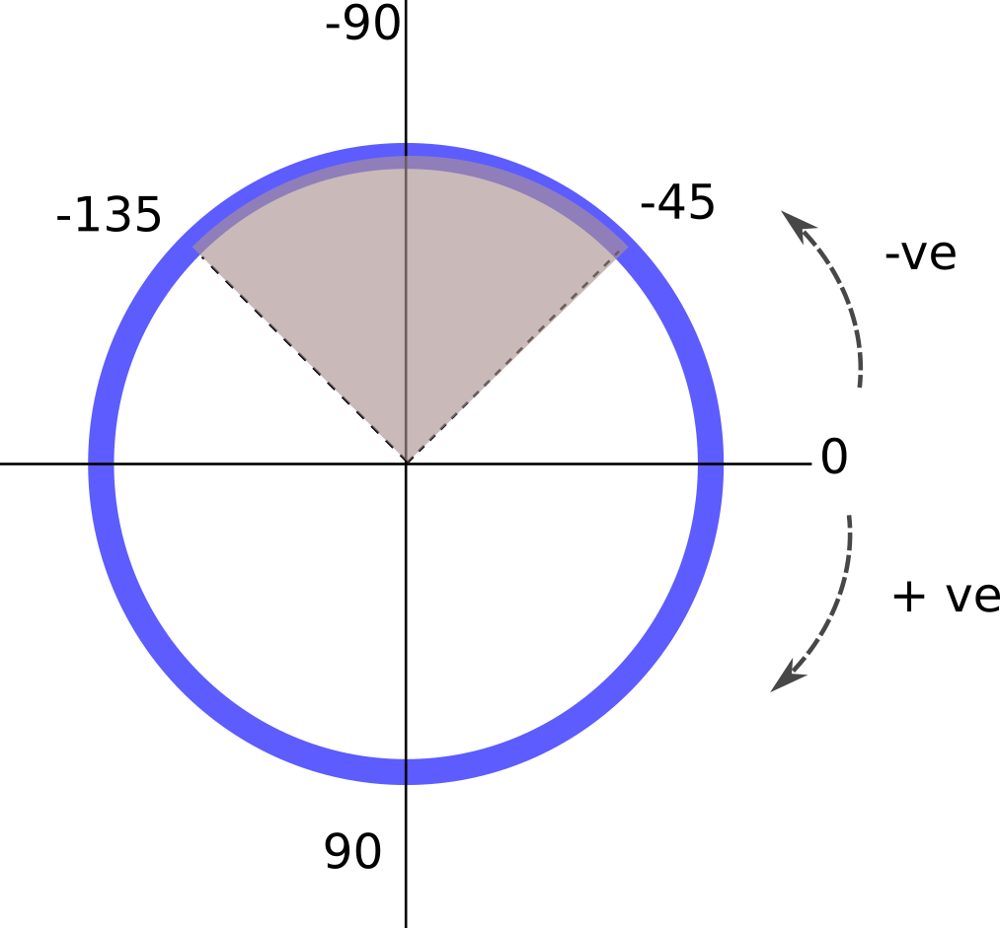

Walkthrough 3 - Optional settings applicable to GIWAXS scans
Calibration information
If you have collected data from a calibration sample you can use it to create your own PONI file. Then include the path to the PONI file as the following variable. If not included then the mapper will assumed all normal incidence to the detector and create a poni file based on the values for detector_distance and the central pixel.
- pyfaiponi
path to a PONI file to be used by pyFAI
Extra output formats
If you have your own software which would require either images or profile data separately you can use the following options to output additional file as well as the standard hdf5 file.
- savetiffs
when set to True this will output all mapped images as separate tiff files as well as hdf5 format.
- savedats
when set to True this will output all 1d line profiles as .dat files as weill as hdf5 format
Critical edge
When using the DCD special consideration of the incident angle needs to be taken account. For these calculations the mapper needs to know the critical angle of your sample
- alphacritical
provide the critical angle in degrees for the substrate material being measured
Binning
You can adjust the options pyFAI will use for its binning procedue through the following variables
- radialrange
this is the radial range in degrees that you would like used for mapping to 1D profile data, in the format (angle_start, angle_stop) e.g. (0,45). If not included the mapper will calculate the full radial range covered by the scans being mapped.
- resolution
- radialstepval
this is the resolution in the radial angle you would like to be used for mapping to 1D profile data, which will default to 0.01 degrees if not set
OR
- ivqbins
this will set the number of bins you would like to be used for mapping to 1D profile data, which will calculate a step value for the set range being used.
- qmapbins
set the number of bins you would like to be used for the mapping of 2d Qmaps or exitangle maps
GIWAXS masking
- azimuthal_sector
define an azimuthal range over which to carry out the 1d integration for IvsQ. The convention is setting directly to the right of the beam centre as 0, and going counter clockwise increases the degrees to the negative direction, and going clockwise increases the degrees in the positive direction. Then provide the sector going from largest negative angle to largest positive angle, for example the sector shown in the diagram below is given by the values (-135, -45)
{kind=link}

Examples of using all of these together for an extra section in your exp_setup file is as follows:
# ===================================================================
# =========Optional settings for GIWAXS analysis
# ===================================================================
pyfaiponi = '/home/myponifiles/sample1.poni'
savetiffs = True
savedats = True
alphacritical = 0.08
radialrange = (0, 60)
radialstepval = 0.025
qmapbins = (1200, 1200)
azimuthal_sector = (-110, -80)
# ===================================================================
# =========Optional settings for GIWAXS analysis
# ===================================================================
#If you have collected data from a calibration sample you can use it to create your own PONI file. Then include the path to the PONI file as the following variable.
pyfaiponi = '/home/myponifiles/sample1.poni'
# There will always be a .hdf5 file created. You can set the option for exporting additonal files with the savetiffs and savedats options below
# if you want to export '2d qpara Vs qperp maps' to extra .tiff images set
# savetiffs to True
savetiffs = True
# if you want to export '1d I Vs Q data' to extra .dat files set savedats
# to True
savedats = True
# critical edge of sample in degrees
alphacritical = 0.08
# if calculating pyfai integration on scan with moving detector and large number of images, there is the option to
# specify range of q or theta so that number of bins can be calculated. If commented out this will automatically calculate
# the limits of the dataset #e.g.
radialrange = (0, 60)
# specify steps in theta to calculate the number of bins - if commented out this will default to 0.01
radialstepval = 0.025
###==OR
# ## specify directly the number of bins for I Vs Q profile - which will mean radialstepval will have no effect.
# ivqbins = None # e.g. 1000
# *********calculating qpara Vs qperp maps,
# set number of bins in the form (q_parallel, q_perpendicular)
qmapbins = (1200, 1200)
# define an azimuthal range over which to carry out the 1d integration for IvsQ
azimuthal_sector = (-110, -80)